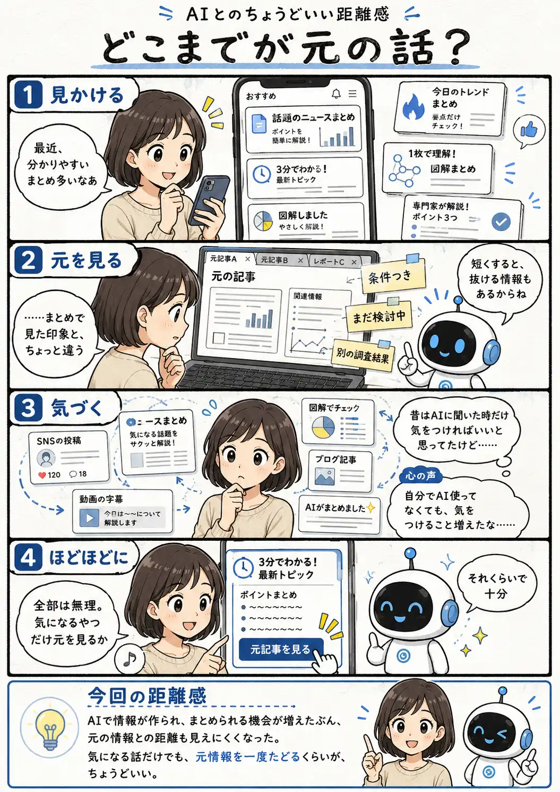

#115
どこまでが元の話？
分かりやすいけど、元ではどう言ってた？

メモ
AIで文章や図解を作りやすくなり、情報を短く分かりやすく届ける方法も増えました。ただ、要約する以上、何かは省かれます。条件や前提、まだ決まっていないことまで削れると、元情報とは少し違う印象になることもあります。
すべての情報を毎回調べ直すのは大変です。だからこそ、気になった話や判断に使いたい情報だけでも、元の記事や資料まで一度たどってみる。AIを直接使っていないときにも役立つ確認方法かもしれません。
今回の距離感
AIで情報が作られ、まとめられる機会が増えたぶん、元の情報との距離も見えにくくなった。気になる話だけでも、元情報を一度たどるくらいが、ちょうどいい。